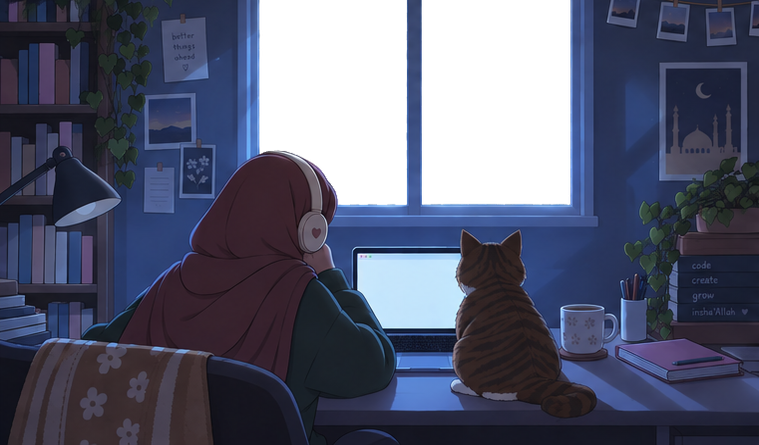

project one
[One or two sentences: what it is, what you did, what you learned.]
- tag
- tag

[Write a short, warm intro here: who you are, what you do, and what you're working toward.]
[A second paragraph is a good place for your story, your values, or what you love making.]
weather by Open-Meteo.com
[One or two sentences: what it is, what you did, what you learned.]
[One or two sentences: what it is, what you did, what you learned.]
[One or two sentences: what it is, what you did, what you learned.]